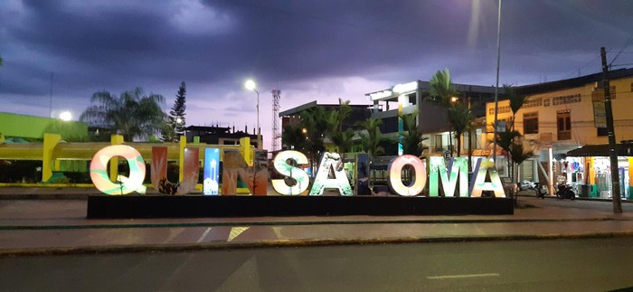
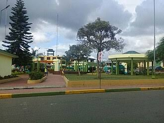
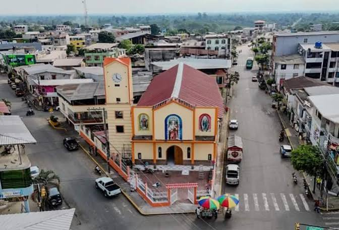
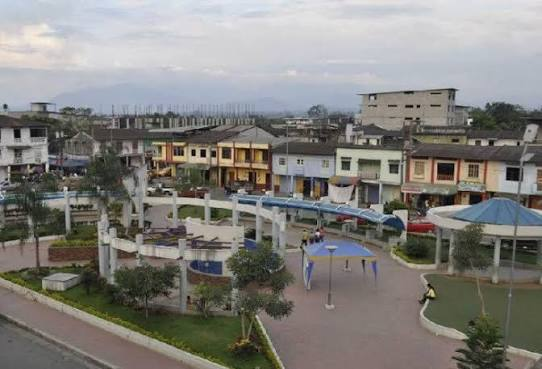
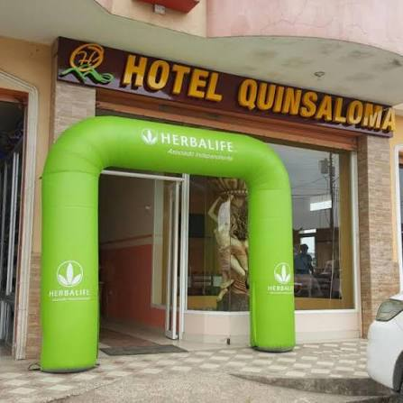
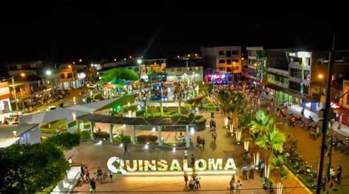

Bienvenido a la página oficial del cantón Quinsaloma, uno de los cantones más jóvenes de la provincia de Los Ríos. Destaca por sus hermosos paisajes naturales, su riqueza hídrica y su alta producción agrícola y forestal.

Quinsaloma funcionó inicialmente como un importante recinto del cantón Ventanas. Gracias al empuje y desarrollo sostenido de sus habitantes, logró su cantonización oficial el 20 de noviembre de 2007.

El cantón cuenta con una organización territorial dinámica:
La cocina tradicional quinsalomeña resalta los potajes más representativos del campo fluminense:

Destacan el río Quinsaloma con sus balnearios naturales de aguas cristalinas, cascadas escondidas en la vegetación y zonas ideales para el ecoturismo y la aventura.

Dispone de hostales locales, cabañas ecológicas y quintas de descanso ideales para los turistas que buscan relajarse en contacto directo con la naturaleza.
Alcalde: Cristhian Aldaz

Cuenta con una población aproximada de 20.000 habitantes, caracterizada por su hospitalidad, juventud, espíritu emprendedor y laboriosidad agrícola.
Se encuentra ubicado en la zona noreste de la provincia de Los Ríos, limitando con los cantones Ventanas, Quevedo y la provincia de Bolívar.